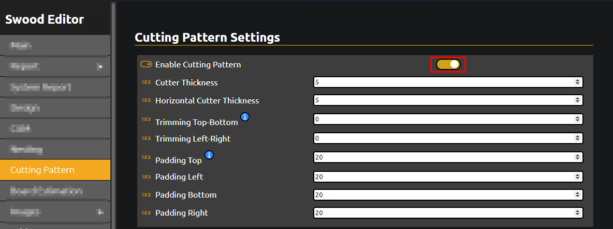
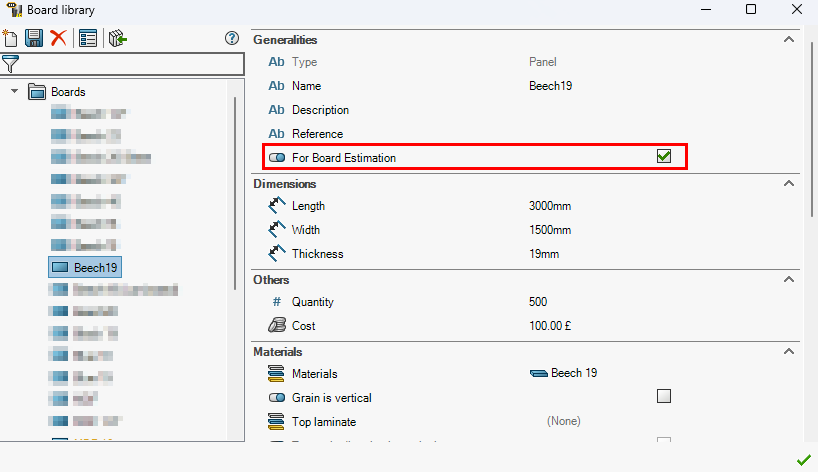

Cutting Patterns
Overview
The report allows users to generate Cutting Patterns for panels made of specific materials. This feature is designed for Beam Saw optimization but can also be used to estimate the number of boards required for a project.
Requirements
- Swood Design
- Swood 2024 SP0.0
- Report v2.10.0
How to Generate a Cutting Pattern
To generate a Cutting Pattern, start by enabling the option in the Swood Editor as seen below.

Then, define a board in the Board Library for all materials you which to send to the Cutting Pattern and enable For Board Estimation.
